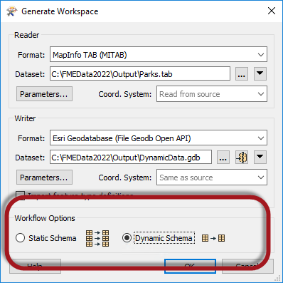
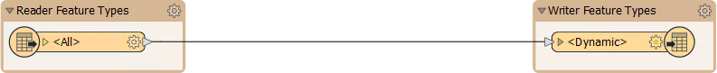

After completing this unit, you’ll be able to:
When you create a workspace using the Generate Workspace dialog, there are two Workflow Options: Static Schema and Dynamic Schema.

The Static Schema option is the default. It assumes a fixed schema that FME is aware of before running the workspace. The Dynamic Schema option creates a schema-less workspace with dynamic readers and writers.
It is, however, possible to create a workspace where only the readers or writers are dynamic.
The Add Reader dialog has similar options for static and dynamic; however, in this case, they are labeled to reflect what they do: they create Individual Feature Types or a Single Merged Feature Type:
A dynamic reader is similar to setting the Merge Feature Type option on reader feature types.
The Add Writer dialog has options that let you define feature types and their attributes. The most commonly used ones are Manual and Automatic. There is also an option that adds a writer in Dynamic mode:

Both dynamic readers and dynamic writers each have a single Feature Type, regardless of the schema of the reader datasets:

Notice that there is only a single feature type, regardless of whether the data comprises several layers or tables.
Also, notice that the sole reader Feature Type is named <All> (which provides a clue to what is happening here) and that the sole writer Feature Type is named <Dynamic>.
All source data is read through a single feature type when the workspace is run. On the writer side, although there is only one output type, the data will be dynamically divided back into its component layers, keeping its original attributes and geometry type.
With this workspace, you can switch the source dataset to anything (in the correct format), and the output will be a mirror image. There is no need to worry about unexpected input or unsupported geometry types. Plus, if you used the Generic Reader/Writer, it could read any dataset in any format and create a duplicate output in the format of your choice!